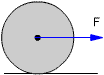
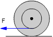

 |
Mediante la fuerza F se hace rodar sin deslizar un cilindro homogéneo (Masa: m, Radio: R ) por una superficie horizontal con coeficiente de rozamiento μ. Determinar: a) La aceleración de traslación
del cilindro |
 |
Mediante la fuerza F se hace rodar sin deslizar un rodillo por una superficie horizontal. Determina su aceleración de traslación Datos: m = 1 kg, R = 5 cm, r = 3 cm, F = 10 N Considerar el rodillo como un cilindro homogéneo |
Una esfera maciza, de masa m y radio R, baja rodando sin deslizar por un plano inclinado de ángulo φ y coeficiente de rozamiento μ. Determinar:
a) La aceleración de su c.d.m
b) Máxima inclinación del plano para que la esfera no deslice
Un cilindro macizo, que va rodando sin deslizar, comienza a subir por un plano inclinado de ángulo φ. Determina su aceleración de frenado
Por un plano inclinado, de ángulo 30º y longitud 30 m, bajan rodando sin deslizar una esfera y un cilindro que partieron simultáneamente del reposo.
a) ¿Cuál de ellos llegará
antes al final del plano?
b) ¿A que distancia estará el otro de él entonces?
Una cuerda se enrolla en un cilindro de masa m y su extremo libre se ata al techo. El cilindro se deja caer partiendo del reposo y gira a medida que se desenrolla la cuerda. Calcular la aceleración del c.d.m y la tensión de la cuerda
En el punto más alto de un plano inclinado de ángulo φ y longitud L se suelta una esfera maciza que baja rodando sin deslizar. Calcular su velocidad cuando llega al final de la cuesta
 |
Calcula la velocidad del cilindro (Masa: m, Radio: R) cuando haya recorrido una distancia L partiendo del reposo |
Por un plano inclinado se dejan rodar sin deslizar dos esferas de igual masa y radio pero con distinto momento de inercia. Discutir cuál de ellas llega antes abajo admitiendo que el c.d.m de ambas esferas está en su centro geométrico
Un cilindro macizo comienza a subir por un plano inclinado de ángulo φ, rodando sin deslizar. Siendo su velocidad inicial de traslación v, determina la distancia que recorre hasta detenerse